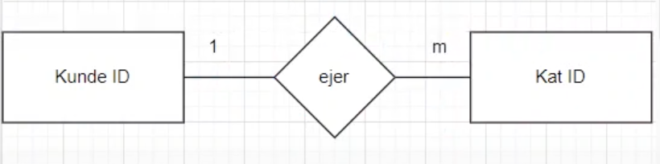

Mit informatik portfolio
Databaser
I dette emne har vi arbejdet med databaser og hvordan de er bygget op og derefter lavet vores egen database og koblet den sammen med javascript og CSS.
Databaser generelt
En database er en samling af data der er struktureret på en meget nem og overskuelig måde. I en database er der det der kaldes en primærnøgle som er en form for ID. Når man snakker om databaser så skal de være det der kaldes normaliseret, hvilket er en række krav/regler der er for at databasen fungerer optimalt. Reglerne er følgende:
1. Der skal være en unik primærnøgle - altså det der er ingen i denne kolonne der kan være det samme, det kunne fx være CPR-numre, da ingen har det samme CPR-nummer.
2. Ingen kolonner må være afhængige af andre kolonner end primærnøglen - det vil altså sige at alle de andre kolonner i databasen skal kun afhænge af primærnøglen og hvis de afhænger af andre kolonner der ikke er primærnøglen må man oprette et nyt excel-ark/database.
3. Det samme data skal kun forekomme et sted - altså man skal ikke have flere kolonner der beskriver det samme.
4. Dataen skal være relateret til hinanden - altså det skal hænge sammen, fx forskellige informationer om en person, bil eller dyr.
Indenfor databaser findes der også det der kaldes et E/R-diagram der beskriver relationer der kan være i en database og her er der tale om en-til-en, en-til-mange og mange-til-mange. Et eksempel på en-til-mange kunne fx være en person der ejer flere forskellige katte. Dette beskrives i et diagram som eksemplet herunder, hvor en er symboliseret med tallet 1 og mange er symboliseret med m:

Vores database - Hundetinder
Vi har som sagt lavet vores egen database i dette emne, og her har min gruppe bestående af mig, Wilma og Sara lavet "Hunde-tinder", hvor man kan finde kærlighed til sin hund. Her ses startsiden:
Når man så trykker på en af knapperne kommer man videre til de hunde man kan vælge imellem, hvor man så enten kan vælge den eller afvise den og få en ny mulighed, her er et eksempel:
Gennemgang af relevant kodestykke
I dette kodestykke starter vi med at hente dataen fra vores database som er det der hedder "Function generertext". Herfter sætter vi variablen i til 0 til at starte med og siger at i kan ikke være større end den datamængde vi har, men indtil da skal den bare lægge 1 til i for hver gang. Efterfølgende ses det at hvis i =x så henter den alt det data der passer til det ID ned altså variablene navn, race, lidtommig og billedet og dermed vises det på skærmen.